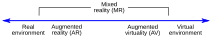
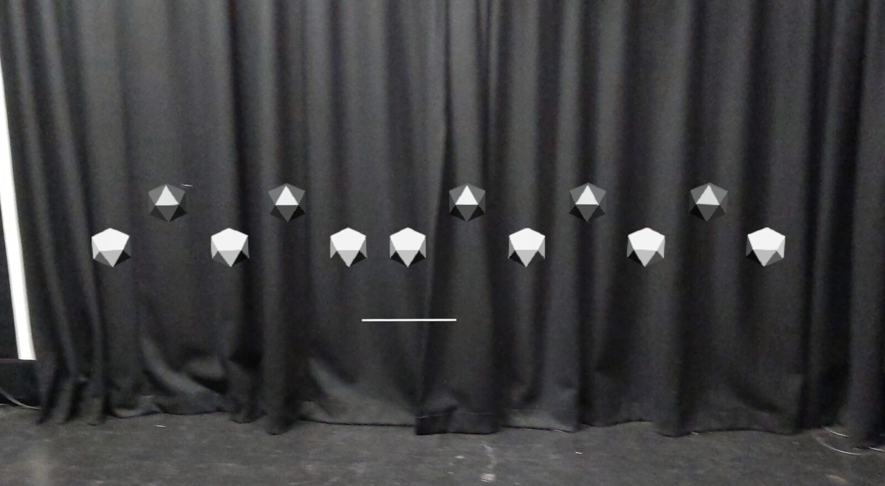
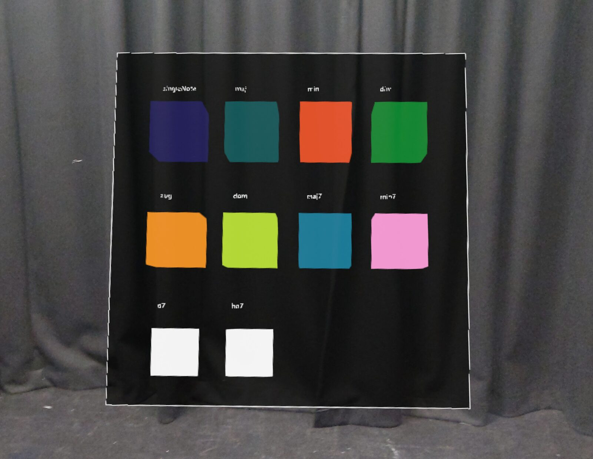
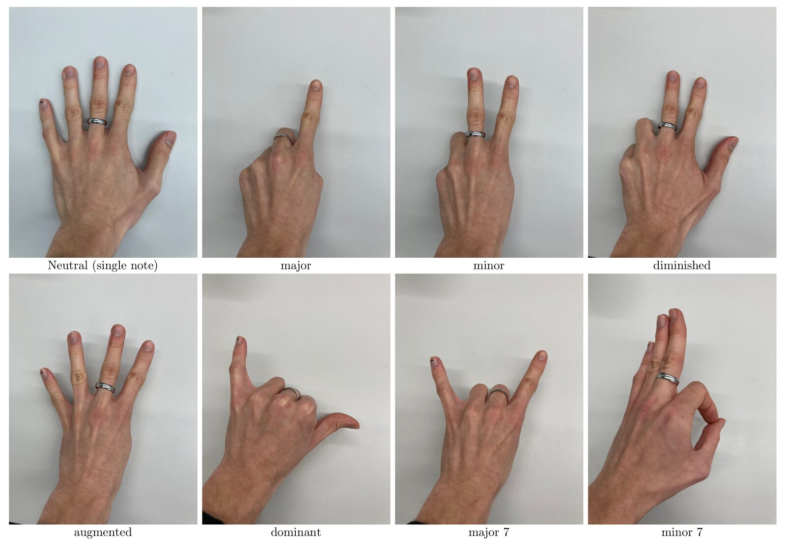

Mixed Reality Musical Interface: Exploring Ergonomics and Adaptive Hand Pose Recognition for Gestural Control
Abstract
The study of extended reality musical instruments is a burgeoning topic in the field of new interfaces for musical expression. We developed a mixed reality musical interface (MRMI) as a technology probe to inspire design for experienced musicians. We namely explore (i) the ergonomics of the interface in relation to musical expression and (ii) user-adaptive hand pose recognition as gestural control. The MRMI probe was experienced by 10 musician participants (mean age: 25.6 years [SD=3.0], 6 females, 4 males). We conducted a user evaluation comprising three stages. After an experimentation period, participants were asked to accompany a pre-recorded piece of music. In a post-task stage, participants took part in semi-structured interviews, which were subjected to thematic analysis. Prevalent themes included reducing the size of the interface, issues with the field of view of the device and physical strain from playing. Participants were largely in favour of hand poses as expressive control, although this depended on customisation and temporal dynamics; the use of interactive machine learning (IML) for user-adaptive hand pose recognition was well received by participants.
Introduction
In recent years, the increased popularity of virtual reality (VR) technology has led to the establishment of virtual reality musical instruments (VRMIs) as a research field. However, less work has been conducted on mixed reality musical interfaces (MRMIs), which are the focus of this work. According to Milgram et al. [1], the mixed reality medium can be situated between the real and virtual environments (see figure 1). Head-mounted MR devices are capable of rendering three-dimensional imagery onto translucent screens mounted in front of users’ eyes, thus removing the necessity of a separate monitor or mobile display.


The reality-virtuality continuum described by Milgram et al. [1]
Existing works on VRMIs focus on the design and implementation of instruments ([2][3][4][5][6][7]), user experience ([8][9]), general techniques for interaction ([10]) or collaborative music making ([11][12]). Works in augmented reality (AR) for musical interaction explore the use of mobile devices ([13]), multisensory applications of AR ([14]), the augmentation of gestural instruments with projectors ([15]) or the audience experience in an augmented live music performance ([16]). There are many works investigating the sonification of body movement using artificial intelligence ([17][18][19]) and gestural control for music ([20][21][22][23][24]), but to our knowledge, none explore user-adaptive hand pose recognition based on interactive machine learning (IML). Compared to traditional machine learning (ML), IML exposes the “data collection - training - execution” loop to the users of a system [25]. In the proposed MRMI, users can supply their own data for training a hand pose recognition algorithm, allowing them to adjust the model to their own hands.
In the context of our research, ergonomics is about optimising performer well-being and performance with the instrument, taking into account aspects such as the position of the instrument in space, its dimensions and the actions required to manipulate virtual objects. Many works discuss VRMIs using human-computer interaction methodologies ([2][9][10]). Mäki-Patola et al. try to quantify the efficiency of VRMIs and their learning curve [2]. The authors of [9] compare four VRMIs with regard to users’ perceptions of control, intuitiveness, physical effort and others, based on Likert-scale questions. Berthaut reviews interaction techniques based on 3D user interfaces and their applicability for VRMIs [10]. Serafin et al. define display ergonomics as an essential design principle for VRMIs [26], but their discussion focuses on aspects pertaining to the head-mounted VR devices, rather than the ergonomics of the musical interfaces that are used with those devices. We aimed to address the gaps in literature concerning (i) the ergonomics of a musical interface in MR and (ii) the use of user-adaptive hand poses for gestural control using IML in an MRMI.
Our MRMI served as a technology probe in order to reveal how performers think about and interact with a musical interface in MR. In this study, we targeted musicians experienced in Western music, of no particular instrument group. Our focus was on interface ergonomics rather than on the produced music. Nevertheless, we required participants with musical experience, since the study involved musical tasks.
Related work
Designing VRMIs
In 2014, Wang presented a set of principles for visual design of computer music [27]. He provided guidelines for researchers working on virtual instruments with visual components. The principles are based in part on Cook’s set of principles for designing computer music controllers [28]. Cook’s third principle “copying an instrument is dumb, leveraging expert technique is smart” is specifically relevant to VRMIs and, by extension, MRMIs. Cook also suggests that designers should find ways to utilise the specific mechanisms that the target environment affords.
Serafin et al. [26] proposed to classify existing VRMIs into two categories:
VRMIs that attempt to copy traditional instruments
VRMIs that employ novel ideas for interface design and/or attempt to extend traditional instruments
Works falling into the first category include the virtual membrane, xylophone and gestural FM synthesizer [2], Cirque des bouteilles (blowing on virtual bottles to produce sounds) [3] and the Coretet bowed string VRMIs [4]. There is a low entry barrier for performers, due to the VRMIs’ close resemblance with physical instruments. However, the playing experience with those instruments often results in a perceived loss of fidelity for performers, since the instruments cannot offer the same level of control as their physical counterparts.
The second category includes VRMIs such as the virtual air guitar [2], the Crosscale and ChromaChord instruments [5][6] and the Wedge interface [7]. These works take inspiration from conceptual ([2]) or real physical ([5][6][7]) instruments. The rationale is to provide a relatively low entry barrier for performers through interfaces that resemble traditional instruments physically or conceptually, but extend the playing capabilities through gestures and interface elements that would be hard to implement in the physical world. VRMIs in that category often rely on established practices in musical interface design, e.g., creating structures of virtual objects that subdivide an octave into 12 semitones. However, they introduce novelty through extensions of the interface. For instance, the Crosscale instrument extends a virtual keyboard by injecting the notion of a guitar’s fretboard into the design - instead of one set of keys, users play on a virtual matrix, where each row is a pitch-shifted copy of the previous row.
Connecting gestures to sound using IML
We investigate here how hand poses can be used as gestural control in an MRMI. Gestures can be characterised as a sequence of signals, yielding data that can be processed and stored [29]. Machines can be trained to learn the commonalities and differences between gestures of different users. The Wekinator system [30] greatly simplified the application of ML techniques to musical performance. The key feature of Wekinator is its approach to training. Instead of gathering a dataset prior to training, training data is provided in real time by the user.
Françoise et al. further developed this idea with a set of probabilistic models for the design of movement and sound relationships in real time performance systems [31]. They established the relationship between movement and sound using a mapping-by-demonstration approach. Similar to the Wekinator platform, models are trained by learning examples of movements and gestures supplied by the users. In the training phase, users can define and refine mappings. In the performance phase, gestures are connected to sounds. The quality of the mappings is refined iteratively.
Design of the MRMI
Design method: technology probes
Design or technology probes have been described as “collections of evocative tasks meant to elicit inspirational responses from people” [32] or “[instruments] that [are] deployed to find out about the unknown - to hopefully return with some useful or interesting data” [33]. As described by Hutchinson et al., their distinguishing features are:
Simple functionality - probes should only contain a very limited number of functions
Flexibility - probes should be open-ended and allow for experimentation
Usability - probes should not be highly usable in the HCI sense, but provoke users and invite discussions about the system
Logging - probes should collect data about their users to help researchers understand the problem better
Design phase - probes should be an early and integral part of the design process in order to challenge the designer’s ideas
We chose this design method for the proposed MRMI. It features a simple interface with a few core functions. It is flexible and not optimised for usability. The MRMI was introduced to challenge our design ideas, which we discuss below. The resulting insights will inform our future work.
Design considerations
It should be stated here that the proposed MRMI is not neutral in a musico-ideological sense. However, our current research focuses on ergonomics and IML, rather than music. We drew inspiration from concepts established within the Western musical tradition, such as the subdivision of octaves into 12 semitones. With that in mind, we formulated four design objectives:
DO1: The MRMI should provide a low entry barrier for musicians
DO2: The MRMI should include “magical” interactions [34], i.e. interactions that are hard or impossible to achieve with physical interfaces
DO3: The MRMI should employ hand-pose recognition as one of the gestural controls
DO4: IML should be an integral part of the MRMI
Musical objects and instrument layout
We define musical objects (MOs) as individual virtual objects in the interface that produce musical notes and chords. Figure 2 shows the general layout of the interface, captured from the device’s screen. The MRMI is comprised of 12 MOs arranged horizontally, covering one octave divided into semitones (C4 to B4). The MRMI is an attempt to combine techniques from string instruments and keyed instruments. The fundamental idea is to play with the right hand and modify sounds with the left. The layout aims to satisfy DO1, based on the assumption that experienced musicians understand the piano’s subdivision of octaves into semitones conceptually.
Each MO can be touched with one finger and dragged through space. Touching an MO triggers the assigned note, or a chord, if a modification is applied through a hand pose. Visual feedback is given through a colour change of the MO. As defined by Magnusson, the term ergophor denotes a concept or technique that is carried over from one medium to another [35], e.g. piano keys displayed on a tablet screen. Here, MOs provide an ergophor for traditional piano keys. However, they are also subjected to “magical” interactions beyond what a traditional piano keyboard provides. Dragging an MO triggers a modification of that note or chord. When released, the MO snaps back to its original position. The type of modification is defined by the pose of the left hand1.
Using the bar located below the MOs (see figure 2), the MRMI can be repositioned, scaled, and rotated within certain ranges to accommodate the needs of individual performers (from approximately 1.5 metres to 3 metres end-to-end). This set of mechanisms aims to satisfy DO2.


Screen capture from the HoloLens 2 device showing the instrument layout with 12 MOs
Harmony & arpeggios
We integrated several chord qualities with MOs to allow performers to play more complex musical structures. In accordance with DO3, we incorporated a light-weight hand-pose recognition algorithm with the MRMI that continuously tracks and classifies the joint configurations of the user’s hands, thus giving an estimate of the user’s current hand pose. The classified hand poses can be mapped to the major, minor, diminished, augmented, dominant, major 7th, minor 7th, diminished 7th and half-diminished 7th chord qualities.
When a hand pose is activated, touching an MO will trigger the mapped chord quality with the MO’s assigned note as the root. Additionally, users can arpeggiate through the chord by dragging MOs through space.
The mapping schema is exposed to users and can be changed at any time using a slot-based mapping interface (see figure 3). Each slot corresponds to a chord type and each coloured cube corresponds to a recorded hand pose.


Screen capture from the HoloLens 2 device showing the mapping interface
Interactive machine learning
It is apparent that individual performers may have different hand morphologies and flexibilities. With traditional ML techniques, the set of hand poses available to users would need to be pre-defined by the designers in order to train the algorithm. To give users as much flexibility as possible, the IML paradigm was adopted and integrated with the MRMI. Here, IML allows each individual user to record their own set of hand poses. As such, the desired hand poses of each user become part of their experience with the interface; the MRMI learns to respond to performers.
The IML training features (recording and deleting hand poses) are exposed to users as an array of buttons in the interface. By selecting one of the hand pose cubes and pressing a button, performers can record and fine-tune hand poses. This process aims to satisfy DO4. The mapping interface and IML features are located on the side of the MRMI.
Demonstration
Please refer to the video2 below for a short demonstration of the MRMI’s features. The video gives a brief explanation of the interface and the IML features.
Video demonstration of the features in our MRMI
Implementation
The MRMI was implemented for the head-mounted Microsoft HoloLens 2 device using the Unreal Engine framework. Unreal Engine was chosen as a framework because it is free, fully open source, and supports C++ implementation.
Software implementation
The core interface was implemented as a software class. The MOs contained in the interface are defined in a separate class. The core interface then dynamically instantiates the 12 MOs. The individual components that make up an MO were abstracted using object-oriented programming principles. The table below gives an overview of the components contained in an MO.
Component name | Description |
|---|---|
Finger collision detector | Continuously tracks users’ hands and registers collisions with specific hand joints; used for touching MOs. |
Hand pose listener | Listens to changes in the user’s left hand pose to trigger changes in the notes currently assigned to the MO. |
Note generator | Keeps track of the MO’s state and produces symbolic notes and chords accordingly. |
Generic manipulator | Enables the MO to be dragged through space; used for arpeggios. |
Table 1: Components that make up an MO in the proposed MRMI
Hand pose recognition & mapping
We used the InteractML software library3 to integrate hand pose recognition in the MRMI. The library, which was developed as an extension of Fiebrink’s Wekinator software [30], provides a k-nearest-neighbour classifier that is optimised for use on mobile devices. Hand joint data is used as input data for the algorithm in our MRMI. The rotation data of hand joints are calculated by the HoloLens 2 device continuously and exposed in Unreal Engine. The rotation data are expressed as vectors, composed of pitch, yaw and roll values, each of which is stored as a floating point number. The input data for one hand are then comprised of 60 floating point numbers
(). Based on the relatively low number of dimensions of the input data, the algorithm is able to run on the device in real-time.
Sound generation
The proposed MRMI is essentially a gestural controller: it takes gestures as inputs, forwards them to a separate sound production unit, and returns feedback in the form of the visual imagery rendered into the user’s environment. The actual sound generation happens on a separate machine. In this study, we used a virtual piano instrument running inside a digital audio workstation (Ableton Live). The MRMI sends signals to the computer using the open sound control protocol (OSC) [36], which are then turned into Musical Instrument Digital Interface (MIDI) signals and decoded by the virtual instrument in the digital audio workstation. In the study sessions, the host computer was connected to a set of stereo loudspeakers in the laboratory, acting as a public address system (PA) for performers.
Evaluation
Procedure
We conducted a user study to deploy the MRMI technology probe. The study was structured into three tasks. Before the tasks, the experimenter provided explanations about the device and the interface. Task 1 involved participants familiarising themselves with the MRMI (30 minutes). Participants were asked to experiment with the elements of the interface. They were provided a set of pre-recorded hand poses and respective chord mappings (see figure 4). They could record their own hand poses if they wanted to. During task 1, participants were allowed to ask questions to the experimenter.


Initial mappings of hand poses to chords
Task 2 of the study was a musical task (30 minutes). Participants listened to a piece of music, the backing track (ca. 2 minutes long). The backing track included simple drum parts and a bass line at 120 BPM. Participants were then instructed to play along with the backing track. In task 2, participants were allowed to start, stop and skip through the backing track at any time in order to familiarise themselves with the structure and harmony of the music.
Task 3 was a performance task. Participants were instructed to improvise along with the backing track. However, they were not allowed to stop the track - they had to play for the full duration of the track to simulate a real performance. Participants were allowed to record up to 3 takes.
After the three tasks, we conducted semi-structured interviews with participants. The interview questions (see appendix) inquired about the layout of the interface, the features in MR and IML, music, control and expressiveness.
Finally, participants had to complete a questionnaire based on the Goldsmiths musical sophistication index (GoldMSI) [37]. This allowed us to assess participants’ musical experience, which was necessary for the musical tasks. Participants were recorded on video throughout the experiment.
Participants
10 participants took part in the study. They were recruited through departmental mailing lists at our university, as well as word of mouth. We applied a custom pre-screening while selecting participants, with regard to their musical experience - only people playing at least one musical instrument were selected. Their mean age was 25.6 years (SD=3.0). 6 participants were female, 4 were male. Their nationalities were distributed across Europe (5 participants), India (3) and China (2). 7 of them were students, the remaining participants were professionals. Their main instruments were piano (5), guitar (2), drums (2) and saxophone (1).
Data analysis method: thematic analysis
The participant interviews were transcribed and subjected to inductive thematic analysis. Thematic analysis (TA) pertains to the analysis of participant responses in studies, e.g. responses from an interview. Following the definition from Braun & Clarke, “[TA] is a method for systematically identifying, organizing, and offering insight into patterns of meaning (themes) across a data set” [38]. As a qualitative research tool, its goal is to deduce meaning from data across a dataset.
Results
GoldMSI
The general musical sophistication scores of the participants ranged from 81 to 116 (M=101.60, SD=13.81), which is well above the national average for the United Kingdom (81.58 [37]). While these results do not guarantee our participants’ musical skills, they suggest that our participants have received an adequate amount of musical training, are actively engaged in the production and/or consumption of music and possess the perceptual abilities required to listen to music attentively.
Thematic analysis
Thematic analysis was conducted by one coder. 187 codes were extracted from the interview answers. The codes gathered from the answers were compiled into the themes below (code occurrences are reported in brackets). For brevity, themes with a low number of code occurrences are omitted here. Please refer to the appendix for the remaining themes.
Interface control
Reducing the size of the MRMI (26):
Six participants expressed a desire for making the MRMI smaller than the allowed range (“Personally, I would have preferred a smaller space to interact with.”, “That’s why I wanted to make it smaller so I could just sort of, you know, do it in a more confined space.”, “ Yeah, so you can make the interface smaller and not sway your arm around it and trigger a lot of them.”).
Sufficient control with the interface (23):
For some participants, the perceived level of control over the interface was sufficient (“I think I had enough [control], like for anything you wanted to do.”, “It’s like I can control the pitch, no the harmony, the chords I want to do with different postures and different speed.”).
Lack of control with the interface (22):
Others expressed a lack of control over the interface (“Sometimes it responds. Sometimes it’s a bit late, or sometimes it doesn’t respond.”, “Enough control over expressivity, yes, but not enough control over what I’m playing.”, “I feel like I got frustrated at it because I didn’t have enough control”).
Individual finger control for MOs (9):
8 participants stated that they wished that they had individual finger control of the MOs (“[...] only using one finger to point [at MOs] is a little bit too boring sometimes. [...] Like maybe you can switch your fingers or do things like that.”, “And the right hand was just stuck doing one [action]”).
Hand pose recognition and IML
Lacking accuracy of the hand pose recognition algorithm (12):
5 participants found that the initial, untuned hand pose recognition algorithm was not sufficiently accurate (“I got frustrated trying to get the machine to recognise gestures that I was doing”).
Success with recording and re-recording hand poses (10):
However, 9 participants had positive results when recording their own hand poses or rerecording pre-defined hand poses (“I think I’ve really liked that I could make my own hand poses and that makes [it] really interactive.”, “And at the start when it had trouble recognising a single finger and I recorded it after that it was fine.”, “And then once I retrained it [the misclassification] was not happening. I was like that’s interesting, like I did not [expect that]”).
Positive reactions to controlling chords with hand poses (10):
3 participants praised the connection of hand poses to chords (“[...] being able to change the scales by doing that. It expands the possibility of just playing one note and just moving one hand and changing everything from there so that was the best [feature] for sure.”, “The fact that you can use your different gestures to get different chords is cool”).
Expressiveness
Adequate level of expressiveness while playing (10):
Five participants stated that they could play expressively with the interface (“As far as the interface can go, yes, it is... expressive”, “I liked in that sense, I liked the chord usage because it was able to help me create sounds that I might not have been able to create so quickly had I not had them there. So I was definitely able to create some cool interactions with harmony from it.”, “Yeah, I was going for [something] softer, the saloon [music style], soft keys, no sustain at all and I did get that out of it.”).
Limited expressiveness while playing (7):
Four participants stated that they felt like their playing was constrained (“I think I found it hard to actually do what I want to do.”, “At this point you’re kind of limited by. OK, let’s think where was that octave? Which square should I like, pull back and then? Which arm should I like? Which hand gestures should I do to find the correct note. I think it kind of limited me in terms of what I could have played”).
Three participants found it hard to realise their ideas (“My idea in the head no, it was not [replicated] as it was in my head.”, “I would say [I could express myself] up to like 40%, the brain was running more than the hands.”).
Issues & constraints
Field of view (FOV) related issues (7): Two participants stated that the small FOV of the HoloLens 2 device was an issue (“So as soon as I get close to [the musical objects] then my field of view reduces drastically, yeah.”, “And I will reiterate this based on the visual... The ability [to play was] so stuck within the visual range.”).
4 participants addressed the problem of hand pose recognition outside of the FOV specifically (“[...] so it is able to pick up on gestures that maybe you don’t really need to see in order to play.”, “[it would be nice to have] something that allows the system to capture my body without me having to look at my body.”).
Physical strain (4):
Four participants experienced physical strain as a result of playing with the instrument (“Towards the end of the third session, I felt a bit tired in my hands because I had to keep doing this, the whole time, yeah.”, “You’re getting get more tired the more you move about”, “I had to do physio, like cardio to get where I wanted to.”, “I think if I had to do this for two hours, I’d have physical fatigue on my shoulders.”).
Tangibility & tactile feedback (2):
2 participants addressed the lack of haptic feedback (“I would say it would be cool if you had haptic feedback. Because then you would know when you hit it and when you didn’t.”).
Fixing virtual objects to a physical surface (3):
During the interview, one participant realised that they could have attached the interface to a physical surface (“Maybe I should have just put it up on a wall or something and maybe it would have been a lot easier for me to play in terms of [triggering notes correctly].”, “I think maybe the surface would be the best idea because the timing is something that’s very tactile information, like you kind of get that feedback [from that].”).
Discussion & Limitations
The interface was generally well received, although many participants raised issues with the ergonomics of the MRMI. The physical strain that participants felt from playing for an extended amount of time was a major issue. Although only four participants voiced concerns in the interviews, all participants made use of the repositioning feature (i.e. moved the MRMI to a more comfortable location and reduced its size), and all participants took several breaks during the sessions. Notably, none of the participants increased the size of the interface. This raises the question of whether the chosen interface design fits the requirements of a real performance, where musicians will typically play for a duration of 30-120 minutes.
Related to this issue was the often-raised point of reducing the size of the interface beyond the allowed minimum (approximately 1.5 metres). Apparently, the participants expected an interface with a size comparable to their main instruments. This suggests that, given the layout of the proposed MRMI, a more compact interface might be more useful in practice, which would also address the issues raised about the FOV of the HoloLens 2 device. Another strategy to tackle this issue would be to refine the ergonomics of the MRMI. Through better design of the interface and the actions that drive it, strain may potentially be reduced as well. However, if the size of the interface remains similar, FOV-related issues would still remain.
The hand pose algorithm worked well for participants that recorded their own hand poses (9/10 participants). However, given that four of the participants reported issues with misclassification outside of the device’s FOV, a separate investigation is needed to assess whether the current approach is robust enough for use in a mature application. The automatic recognition of hand poses for modifying the behaviour of MOs was well received. More importantly, the integration of IML features appears to be an important step in designing a robust gesture-controlled MRMI, given the differences in performers’ bodies.
The level of perceived expressive control over the MRMI was too limited. Both pianists and players of other instruments raised the point that they wanted to leverage all their fingers individually when interacting with the MOs. The reduction of the right hand to two gestures (touching and dragging) frustrated many participants.
The points about tactility and lack thereof that participants brought forward are also highly relevant for MRMIs. Until technology has caught up, designers need to consider alternative ways of integrating tactile feedback into interfaces. The idea raised by one participant could potentially address this issue. By projecting small virtual objects onto physical surfaces, such as walls, tables or the ground, we could introduce a form of indirect tactile feedback into MRMIs, possibly elevating the playing experience.
With the discussed points in mind, we summarise the key findings of our study:
1. Physical strain caused by prolonged use of the interface was one of the main issues.
2. The interface was not fully contained within the device’s FOV; this led to too many head movements to see and interact with the interface elements.
3. The limitation of MO interactions was a major constraint; users wanted to use all their available fingers to touch MOs.
4. Predefined control gestures were lacking, custom control gestures were found to be better.
5. The lack of tactile feedback was a hindrance for some users.
Point 1 concerns the MRMI's interface design directly. Here, a detailed investigation into the level of control over MRMIs based on the size of their interface elements might reveal more concrete results in the future.
Point 2 relates to the technical limitations of the hardware at the current stage of MR technology. MRMI designers should pay close attention to the limited FOV of head-mounted MR devices in order to minimise frustration that players may experience due to losing track of interface elements.
Point 3 is a practical issue; the reduction of possible hand actions for MOs was a source of frustration for most participants. Where possible, MRMIs should provide individual finger control over their interface elements and not limit the interactions to one specific gesture.
Point 4 reflects on the observation that the majority of participants recorded their own hand poses to control the instrument. Given the complex nature of gestural input in MR and individual differences in human hands we conclude that incorporating mechanisms that allow for the definition of custom control gestures is useful for performers within MRMIs. One limitation of our study stems from the fact that 7 out of 10 participants were active researchers in the field of artificial intelligence (AI). This may introduce a bias towards a positive reception of the use of AI technology in the MRMI and should be studied further .
Point 5 may be mitigated by playing to the strengths of MR devices, leveraging the physical environment to compensate for the lack of tactile feedback of virtual objects. More work is needed here to verify this concept in the future.
Conclusion
We have presented a novel mixed reality musical interface and its application as a technology probe to explore interface ergonomics and user-adaptive hand pose recognition for musical control. We explained the design, implementation and evaluation of the interface. Our results suggest that there are two main issues: physical fatigue caused by the ergonomics of the instrument and problems caused by the limited field of view. Based on the complex nature of gestural data, the integration of interactive machine learning for gestural control appears to be an important step for robust user-adaptive interfaces in mixed reality. Future work should address the shortcomings through an investigation into more compact and more ergonomic interfaces in MR.
Acknowledgments
We would like to thank the anonymous reviewers at NIME for their thoughtful comments. This work was supported by UK Research and Innovation [grant number EP/S022694/1].
Ethics Statement
We hereby declare that this manuscript and the research it describes comply with NIME’s ethical and environmental standards. We submitted a thorough description of the study’s motivation, procedure and goals to the board of ethics at our university and received their approval. All participants were briefed about the contents of the study before the sessions. We obtained written consent from all participants prior to the study sessions. The obtained study data was stored offline on an encrypted device.
It should be noted that the study of new interfaces for musical expression is often based on a set of assumptions about the people that might eventually use them. Our study discusses the ergonomics of a new interface in the mixed reality domain, however it is limited by several factors, such as the interface layout, which was inspired by Western musical concepts and the fact that the current design focuses on performers without impairments or disabilities.
Appendix
Semi-structured interview questions
Interface |
|---|
What is your opinion about the layout of the instrument, i.e. how the musical objects - the objects you used to play notes and chords - are arranged in space? |
Features - MR and IML |
What was the most interesting feature of this MR musical instrument? |
What did not work well? |
What was your experience with recording your own hand poses? Was it useful or did you prefer the pre-defined hand poses? |
What do you think about the use of hand poses to control the instrument? |
Music, control & expressiveness |
Do you feel that the music you produced with the instrument was expressive and matched your creative intentions? |
How would you compare the expressiveness of the MR instrument to your main instrument? |
How easy or difficult was the musical interaction? |
Did you have enough control or not enough? Why? |
General feedback & suggestions |
Do you have suggestions on how to improve such an MR musical instrument? |
Did you miss something? |
What would you be interested in and for what applications? |
Have you ever used a similar application in XR? If yes, could you compare it with this one? |
Do you have any other comments on the MR instrument or the study? |
Semi-structured interview questions
Additional themes from the thematic analysis
Sustaining notes (10):
Half of the participants wanted a way to sustain notes and chords (“I would definitely enjoy if there was a way in which I could play a chord and then play something on the right hand like a typical instrument [...].”).
Minute changes in velocity not recognised (2): Two participants noted that small changes in velocity were not registered by the MOs (“It’s not that responsive for you to actually be able to hear it unless you’re just tapping it and you’re hitting it really hard, but not with like... minute changes.”, “There was just a problem with the velocity. Yes, I want a stronger tone, and then a dimmer tone. That was a bit lacking”).
Semantic hand pose - chord mappings (1): One participant noted that instead of having arbitrary mappings from hand poses to chords, it could be useful to link the semantics of a hand pose to a specific chord (“So I played this. I show 5. It’ll be a major [chord] and if I do a three, it’ll be a minor third or something like that, yeah?”).
Associations with main instruments (3):
Two participants talked about mental associations of the interface with their main instruments (“[I am in favour of] changing chords with your left hand because it totally works for me as a guitarist.”, “And for me, I had to think about the keyboard in my head and figure out what chord I’m playing.”, “But the fact that I had to play the piano using a completely different interface was constraining for me.”).
Hand pose - sound associations (2):
One participant stated that they started associating the shapes of their left hand with the produced sounds (“Yeah, I mean it was like deciding the color or the emotion that you want to convey by your left hand.”, “[...] and like somehow my brain started associating the sound with the shape of my left hand”).
Issues with using the correct gestures (2): 2 participants had trouble discerning the gestures for touching and dragging an MO (“’Initially I felt like I had trouble with dragging and pressing a key’, “And if I want to do that I need to use the grab [gesture]. But the grab doesn’t give me the correct thing I want.”).
Spatial depth (1): 1 participant had issues with the spatial perception of holograms (“I think maybe it’s a matter of practice before you kind of get a good sense of spatial depth when you’re not touching things”).
Footnotes
For this study, we did not consider left- vs. right-handedness.
↩For offline/PDF readers, the video can be found here: https://www.youtube.com/watch?v=rVIKZdsk6ig
↩https://github.com/Interactml/iml-ue4, accessed on 9 Jan 2022
↩
Citations
- ↩Milgram, P., Takemura, H., Utsumi, A., and Kishino, F. 1994. Augmented Reality: A Class of Displays on the Reality-Virtuality Continuum. Telemanipulator and Telepresence Technologies 2351.
- ↩Mäki-Patola, T., Laitinen, J., Kanerva, A., and Takala, T. 2005. Experiments with Virtual Reality Instruments. Proceedings of the 2005 Conference on New Interfaces for Musical Expression, National University of Singapore, 11–16.
- ↩Zielasko, D., Rausch, D., Law, Y.C., et al. 2015. Cirque Des Bouteilles: The Art of Blowing on Bottles. 2015 IEEE Symposium on 3D User Interfaces (3DUI), 209–210.
- ↩Hamilton, R. 2019. Coretet: A Dynamic Virtual Musical Instrument for the Twenty-First Century. 2019 IEEE Conference on Virtual Reality and 3D User Interfaces (VR), 1395–1395.
- ↩Cabral, M., Montes, A., Roque, G., et al. 2015. Crosscale: A 3D Virtual Musical Instrument Interface. 2015 IEEE Symposium on 3D User Interfaces (3DUI), 199–200.
- ↩Fillwalk, J. 2015. ChromaChord: A Virtual Musical Instrument. 2015 IEEE Symposium on 3D User Interfaces (3DUI), 201–202.
- ↩Moore, A.G., Howell, M.J., Stiles, A.W., Herrera, N.S., and McMahan, R.P. 2015. Wedge: A Musical Interface for Building and Playing Composition-Appropriate Immersive Environments. 2015 IEEE Symposium on 3D User Interfaces (3DUI), IEEE, 205–206.
- ↩Deacon, T., Stockman, T., and Barthet, M. 2017. User Experience in an Interactive Music Virtual Reality System: An Exploratory Study. In: M. Aramaki, R. Kronland-Martinet and S. Ystad, eds., Bridging People and Sound. Springer International Publishing, Cham, 192–216.
- ↩Çamcı, A., Vilaplana, M., and Wang, R. 2020. Exploring the Affordances of VR for Musical Interaction Design with VIMEs. Proceedings of the International Conference on New Interfaces for Musical Expression, 121–126.
- ↩Berthaut, F. 2020. 3D Interaction Techniques for Musical Expression. Journal of New Music Research 49, 1, 60–72.
- ↩Men, L. and Bryan-Kinns, N. 2018. LeMo: Supporting Collaborative Music Making in Virtual Reality. 2018 IEEE 4th VR Workshop on Sonic Interactions for Virtual Environments (SIVE), 1–6.
- ↩Hamilton, R. and Platz, C. 2016. Gesture-Based Collaborative Virtual Reality Performance in Carillon. Proceedings of the 2016 International Computer Music Conference, 5.
- ↩Park, S. 2021. ARLooper: A Mobile AR Application for Collaborative Sound Recording and Performance. Perception, Representations, Image, Sound, Music, Springer International Publishing, 554–562.
- ↩Bilbow, S. 2021. Developing Multisensory Augmented Reality As A Medium For Computational Artists. In: Proceedings of the Fifteenth International Conference on Tangible, Embedded, and Embodied Interaction. Association for Computing Machinery, New York, NY, USA, 1–7.
- ↩Berthaut, F., Arslan, C., and Grisoni, L. 2017. Revgest: Augmenting Gestural Musical Instruments with Revealed Virtual Objects. International Conference on New Interfaces for Musical Expression.
- ↩Selfridge, R. and Barthet, M. 2019. Augmented Live Music Performance Using Mixed Reality and Emotion Feedback. Computer Music Multidisciplinary Research, 13.
- ↩Tanaka, A., Di Donato, B., Zbyszynski, M., and Roks, G. 2019. Designing Gestures for Continuous Sonic Interaction. Proceedings of the International Conference on New Interfaces for Musical Expression, 180–185.
- ↩Visi, F.G. and Tanaka, A. 2020. Towards Assisted Interactive Machine Learning: Exploring Gesture-Sound Mappings Using Reinforcement Learning. Proceedings of the International Conference on Live Interfaces (ICLI).
- ↩Zbyszynski, M., Di Donato, B., Visi, F., and Tanaka, A. 2021. Gesture-Timbre Space: Multidimensional Feature Mapping Using Machine Learning & Concatenative Synthesis. In: R. Kronland-Martinet, S. Ystad and M. Aramaki, eds., Perception, Representations, Image, Sound, Music. Springer International Publishing.
- ↩Kiefer, C., Collins, N., and Fitzpatrick, G. 2009. Phalanger: Controlling Music Software with Hand Movement Using a Computer Vision and Machine Learning Approach. In Proceedings of the 2009 Conference on New Interfaces for Musical Expression.
- ↩Gillian, N., Knapp, R.B., and O’Modhrain, M.S. 2011. A Machine Learning Toolbox For Musician Computer Interaction. NIME.
- ↩Thomas J. Mitchell and Heap, I. 2011. SoundGrasp: A Gestural Interface for the Performance of Live Music. NIME.
- ↩Gillian, N. and Paradiso, J. 2012. Digito: A Fine-Grain Gesturally Controlled Virtual Musical Instrument. NIME.
- ↩Liang, H., Wang, J., Sun, Q., et al. 2016. Barehanded Music: Real-Time Hand Interaction for Virtual Piano. Proceedings of the 20th ACM SIGGRAPH Symposium on Interactive 3D Graphics and Games, Association for Computing Machinery, 87–94.
- ↩Fiebrink, R. and Caramiaux, B. 2016. The Machine Learning Algorithm as Creative Musical Tool. In: The Oxford Handbook of Algorithmic Music. .
- ↩Mäki-Patola, T., Laitinen, J., Kanerva, A., and Takala, T. 2005. Experiments with Virtual Reality Instruments. Proceedings of the 2005 Conference on New Interfaces for Musical Expression, National University of Singapore, 11–16.
- ↩Çamcı, A., Vilaplana, M., and Wang, R. 2020. Exploring the Affordances of VR for Musical Interaction Design with VIMEs. Proceedings of the International Conference on New Interfaces for Musical Expression, 121–126.
- ↩Berthaut, F. 2020. 3D Interaction Techniques for Musical Expression. Journal of New Music Research 49, 1, 60–72.
- ↩Mäki-Patola, T., Laitinen, J., Kanerva, A., and Takala, T. 2005. Experiments with Virtual Reality Instruments. Proceedings of the 2005 Conference on New Interfaces for Musical Expression, National University of Singapore, 11–16.
- ↩Çamcı, A., Vilaplana, M., and Wang, R. 2020. Exploring the Affordances of VR for Musical Interaction Design with VIMEs. Proceedings of the International Conference on New Interfaces for Musical Expression, 121–126.
- ↩Berthaut, F. 2020. 3D Interaction Techniques for Musical Expression. Journal of New Music Research 49, 1, 60–72.
- ↩Serafin, S., Erkut, C., Kojs, J., Nilsson, N.C., and Nordahl, R. 2016. Virtual Reality Musical Instruments: State of the Art, Design Principles, and Future Directions. Computer Music Journal 40, 3, 22–40.
- ↩Wang, G. 2014. Principles of Visual Design for Computer Music. ICMC, 6.
- ↩Cook, P. 2001. Principles for Designing Computer Music Controllers. Proceedings of the 2001 Conference on New Interfaces for Musical Expression, National University of Singapore, 1–4.
- ↩Serafin, S., Erkut, C., Kojs, J., Nilsson, N.C., and Nordahl, R. 2016. Virtual Reality Musical Instruments: State of the Art, Design Principles, and Future Directions. Computer Music Journal 40, 3, 22–40.
- ↩Mäki-Patola, T., Laitinen, J., Kanerva, A., and Takala, T. 2005. Experiments with Virtual Reality Instruments. Proceedings of the 2005 Conference on New Interfaces for Musical Expression, National University of Singapore, 11–16.
- ↩Zielasko, D., Rausch, D., Law, Y.C., et al. 2015. Cirque Des Bouteilles: The Art of Blowing on Bottles. 2015 IEEE Symposium on 3D User Interfaces (3DUI), 209–210.
- ↩Hamilton, R. 2019. Coretet: A Dynamic Virtual Musical Instrument for the Twenty-First Century. 2019 IEEE Conference on Virtual Reality and 3D User Interfaces (VR), 1395–1395.
- ↩Mäki-Patola, T., Laitinen, J., Kanerva, A., and Takala, T. 2005. Experiments with Virtual Reality Instruments. Proceedings of the 2005 Conference on New Interfaces for Musical Expression, National University of Singapore, 11–16.
- ↩Cabral, M., Montes, A., Roque, G., et al. 2015. Crosscale: A 3D Virtual Musical Instrument Interface. 2015 IEEE Symposium on 3D User Interfaces (3DUI), 199–200.
- ↩Fillwalk, J. 2015. ChromaChord: A Virtual Musical Instrument. 2015 IEEE Symposium on 3D User Interfaces (3DUI), 201–202.
- ↩Moore, A.G., Howell, M.J., Stiles, A.W., Herrera, N.S., and McMahan, R.P. 2015. Wedge: A Musical Interface for Building and Playing Composition-Appropriate Immersive Environments. 2015 IEEE Symposium on 3D User Interfaces (3DUI), IEEE, 205–206.
- ↩Mäki-Patola, T., Laitinen, J., Kanerva, A., and Takala, T. 2005. Experiments with Virtual Reality Instruments. Proceedings of the 2005 Conference on New Interfaces for Musical Expression, National University of Singapore, 11–16.
- ↩Cabral, M., Montes, A., Roque, G., et al. 2015. Crosscale: A 3D Virtual Musical Instrument Interface. 2015 IEEE Symposium on 3D User Interfaces (3DUI), 199–200.
- ↩Fillwalk, J. 2015. ChromaChord: A Virtual Musical Instrument. 2015 IEEE Symposium on 3D User Interfaces (3DUI), 201–202.
- ↩Moore, A.G., Howell, M.J., Stiles, A.W., Herrera, N.S., and McMahan, R.P. 2015. Wedge: A Musical Interface for Building and Playing Composition-Appropriate Immersive Environments. 2015 IEEE Symposium on 3D User Interfaces (3DUI), IEEE, 205–206.
- ↩Wanderley, M.M. and Depalle, P. 2004. Gestural control of sound synthesis. Proceedings of the IEEE 92, 4, 632–644.
- ↩Fiebrink, R. and Cook, P.R. 2010. The Wekinator: A System for Real-Time, Interactive Machine Learning in Music. Proceedings of The Eleventh International Society for Music Information Retrieval Conference (ISMIR 2010).
- ↩Françoise, J., Schnell, N., Borghesi, R., and Bevilacqua, F. 2014. Probabilistic Models for Designing Motion and Sound Relationships. Proceedings of the 2014 international conference on new interfaces for musical expression, 6.
- ↩Gaver, W.W., Boucher, A., Pennington, S., and Walker, B. 2004. Cultural probes and the value of uncertainty. Interactions 11, 5, 53–56.
- ↩Hutchinson, H., Mackay, W., Westerlund, B., et al. 2003. Technology probes: Inspiring design for and with families. Proceedings of the SIGCHI Conference on Human Factors in Computing Systems, Association for Computing Machinery, 17–24.
- ↩Bowman, D.A., Kruijff, E., LaViola, J.J., and Poupyrev, I. 2004. 3D User Interfaces: Theory and Practice. Addison Wesley Longman Publishing Co., Inc., USA.
- ↩Magnusson, T. 2018. Ergodynamics and a Semiotics of Instrumental Composition. Tempo 73, 287, 41–51.
- ↩Fiebrink, R. and Cook, P.R. 2010. The Wekinator: A System for Real-Time, Interactive Machine Learning in Music. Proceedings of The Eleventh International Society for Music Information Retrieval Conference (ISMIR 2010).
- ↩Wright, M. and Freed, A. 1997. Open SoundControl: A New Protocol for Communicating with Sound Synthesizers. ICMC.
- ↩Müllensiefen, D., Gingras, B., Musil, J., and Stewart, L. 2014. The Musicality of Non-Musicians: An Index for Assessing Musical Sophistication in the General Population. PLOS ONE 9, 2, e89642.
- ↩Braun, V. and Clarke, V. 2012. Thematic analysis. In: APA handbook of research methods in psychology, Vol 2: Research designs: Quantitative, qualitative, neuropsychological, and biological. American Psychological Association, Washington, DC, US, 57–71.
- ↩Müllensiefen, D., Gingras, B., Musil, J., and Stewart, L. 2014. The Musicality of Non-Musicians: An Index for Assessing Musical Sophistication in the General Population. PLOS ONE 9, 2, e89642.